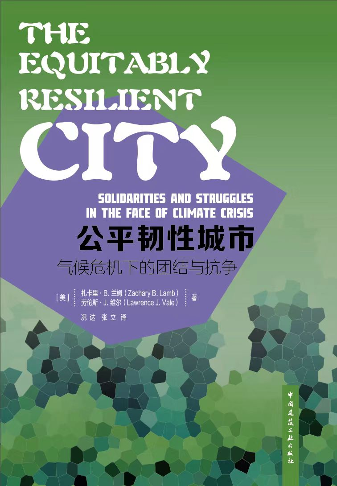

从“韧性”走向“公平韧性”
传统韧性城市讨论容易强调基础设施安全和系统恢复速度，而本书提醒我们： 谁得到保护、谁承担风险、谁参与决策，同样是韧性建设的核心问题。

Book Translation / 译著
气候危机下的团结与抗争
《公平韧性城市》译自 Zachary B. Lamb 与 Lawrence J. Vale 的 The Equitably Resilient City: Solidarities and Struggles in the Face of Climate Crisis。 该书围绕气候危机中的城市韧性与社会公平展开，强调韧性建设不应只关注工程防护和灾后恢复， 更要关注不同群体在住房、环境、治理和安全等方面的真实处境。
原书通过全球 12 个城市案例，讨论居民、社区组织、规划者与政府如何在洪水、热浪、 风暴和长期环境压力中形成合作与抗争。中文译本的出版，有助于把国际韧性城市研究中的 “公平韧性”视角引入中文规划、城市治理和公共政策讨论。
传统韧性城市讨论容易强调基础设施安全和系统恢复速度，而本书提醒我们： 谁得到保护、谁承担风险、谁参与决策，同样是韧性建设的核心问题。
书中的案例展示了城市居民和社区组织如何参与气候适应，说明韧性并不只是技术方案， 也是公共协商、社会团结和制度创新的过程。
对于正在面对极端天气、存量更新和治理现代化的中国城市而言，该书为理解气候风险、 空间公平和社区行动之间的关系提供了重要参考。